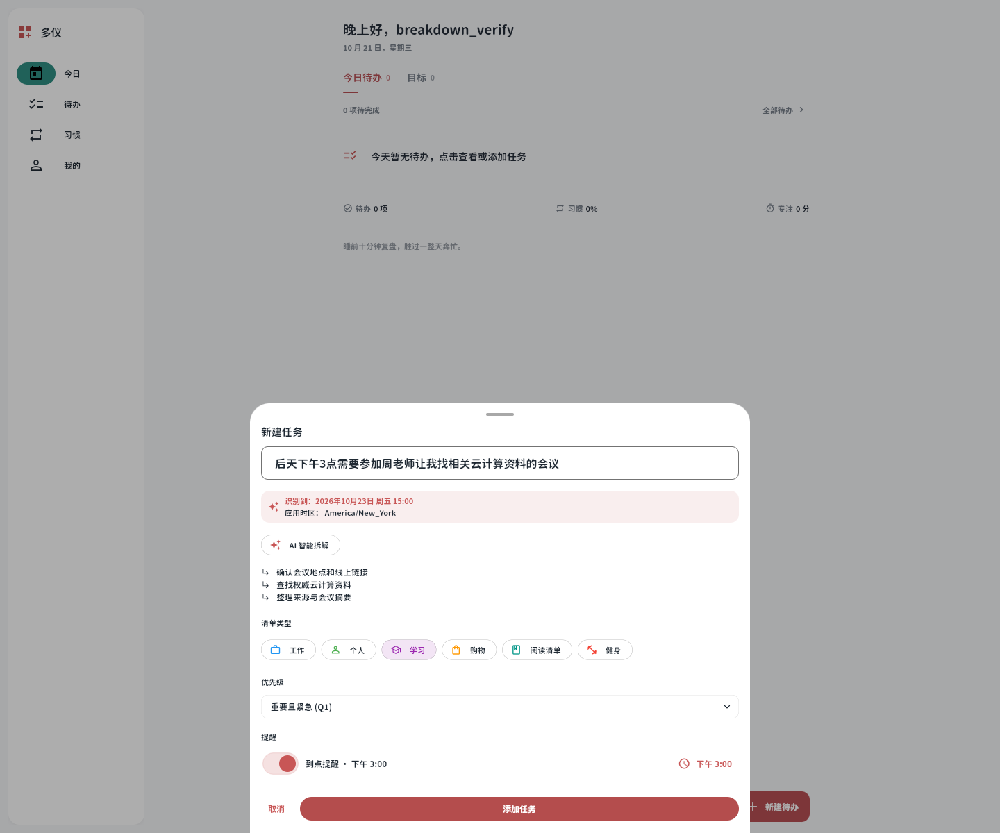
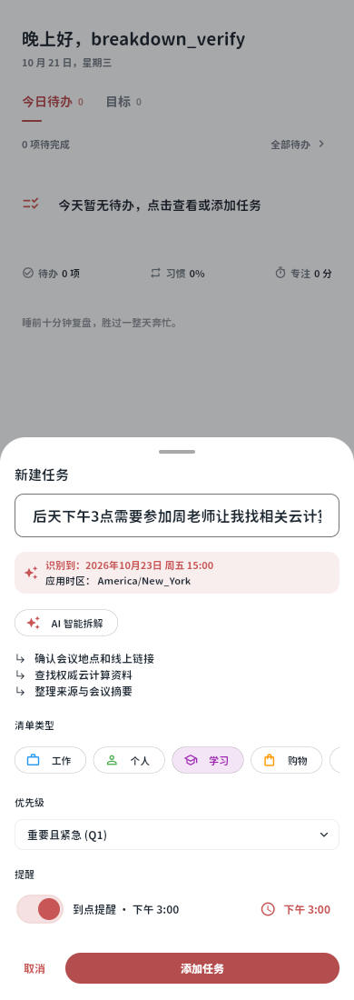
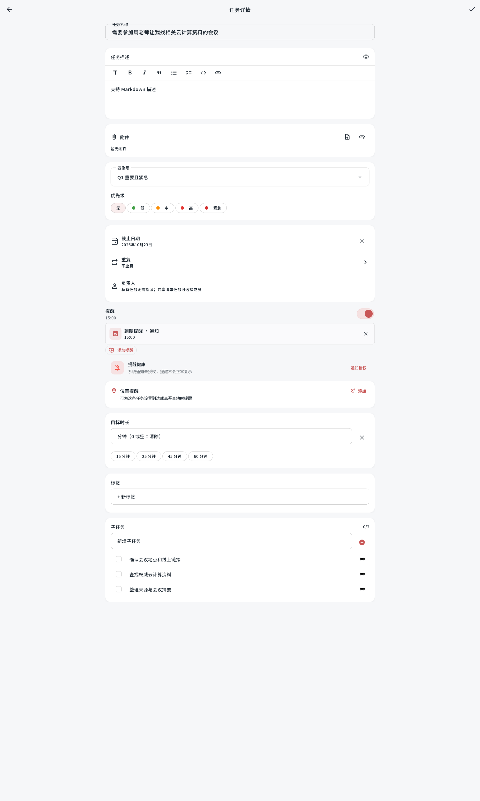

AI 拆解：子任务、清单、优先级与提醒
以下为最终 Flutter Web 实际构建。隔离测试账号使用固定结构化回复，未调用真实模型；“后天下午3点”按应用当前时区解释。清单自动选中学习，四象限切换Q1，提醒自动开启15:00。
桌面 · 自动填写后的新建表单

手机宽度

保存后的详情长页
宽度1440px，使用2400px画布展示完整详情与子任务区；保存数据另见JSON记录。

以下为最终 Flutter Web 实际构建。隔离测试账号使用固定结构化回复，未调用真实模型；“后天下午3点”按应用当前时区解释。清单自动选中学习，四象限切换Q1，提醒自动开启15:00。


宽度1440px，使用2400px画布展示完整详情与子任务区；保存数据另见JSON记录。
